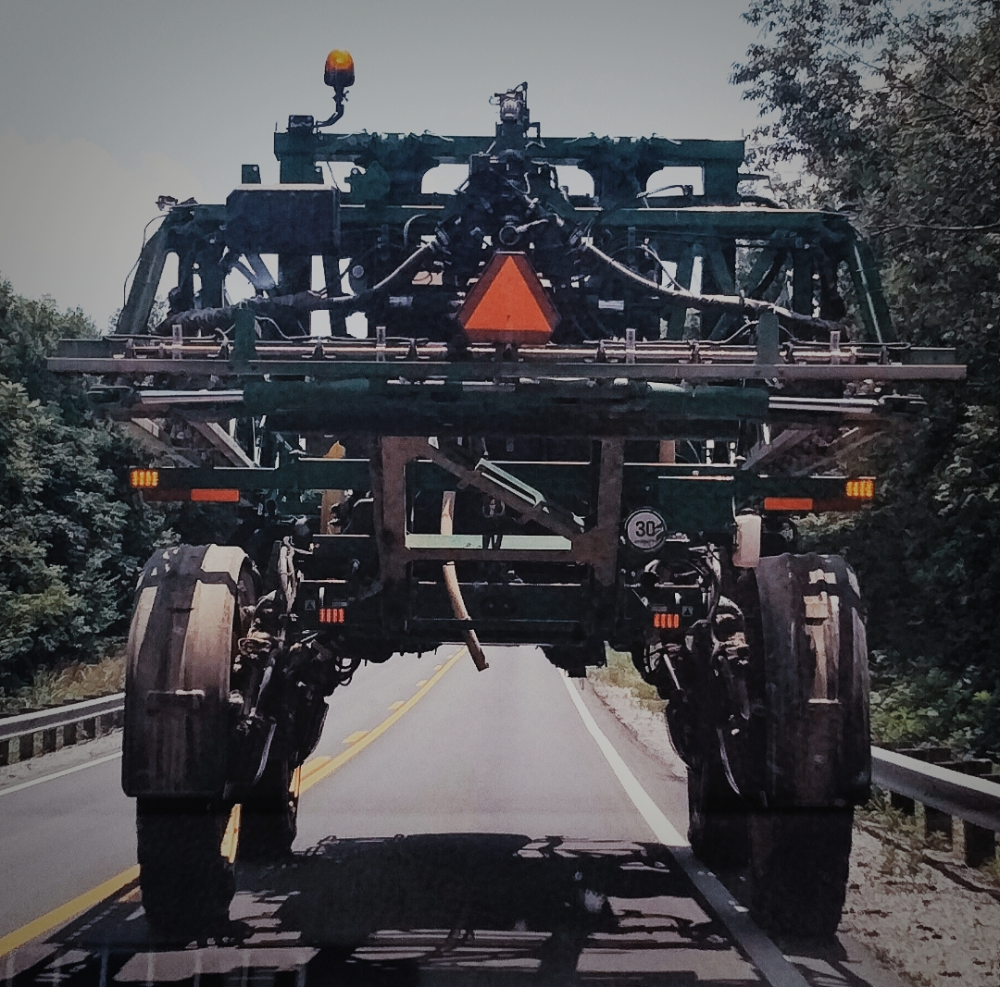

Photography has been a small hobby of mine for a bit of my life.
Yet I found more enjoyment in art for the longest time.
One day I got a new phone and discovered it had a built in photo editor!
after some time I got better and better at editing photos.
and i'm pretty proud of the photos i've made so far.
One of my recent edited photos is seen here!

why edit it this way?:
- I wanted it to look similar to a game I was playing at the time.
- The original photo was way to saturated, that's why it's so desaturated now.
- Because it's my art.
This photo was taken on a road going to Kentucky
I was in the passenger seat of my girlfriends car.
I thought the vehicle looked awesome so I snapped a photo,
then I started to edit it until I was happy with its results!
here a link to artistic Photography